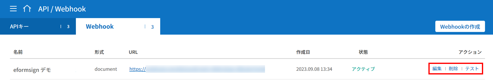
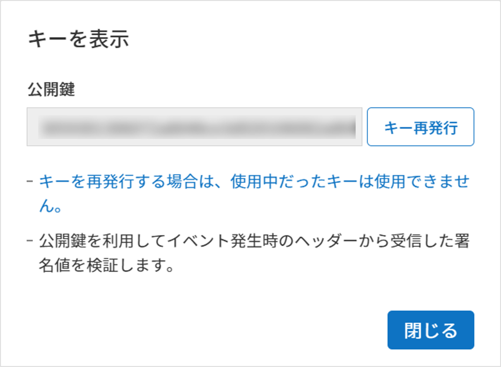
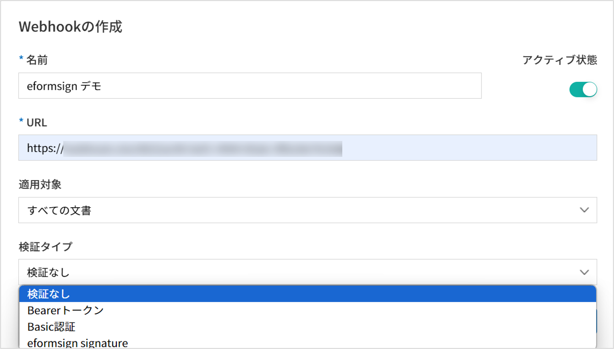
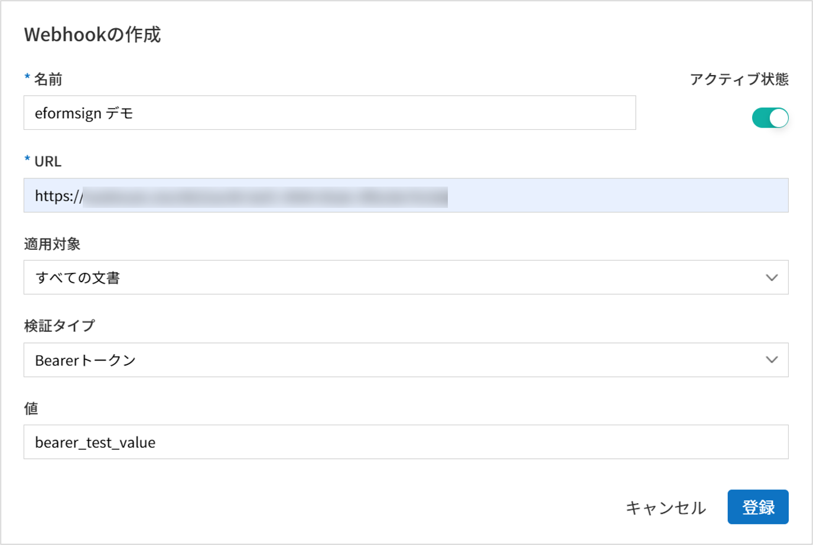
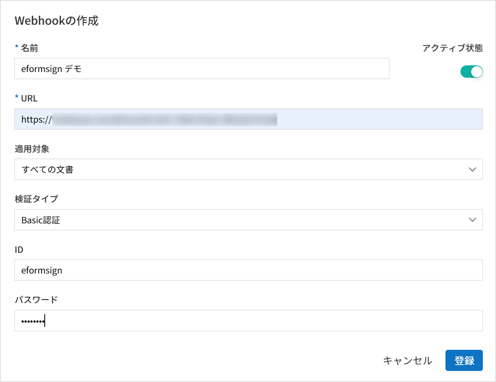

eformsign Webhookの使い方
eformsignでイベントが発生した場合、そのイベント情報をユーザーのシステム/サービスに通知する機能です。Webhookを設定すると、ユーザーのWebhook endpointにそのイベント情報をHTTP POST形式で通知します。
Tip
Webhookのendpointとは、ユーザーのclient callback URLのことです。Open APIを持続的に呼び出して変更内容をチェックする方式（polling）に比べて不要な呼び出しをせずに、eformsign 上のイベントについての情報を取得することができます。
準備
Webhookの作成
eformsignに代表管理者としてログインし、左側のメニューから コネクト > [API/Webhook] ページに移動します。

[Webhook] タブを選択し、Webhookの作成 ボタンをクリックします。

Webhook の作成ポップアップで名前、Webhookを受信するURL、アクティブ状態を選択します。

適用対象を選択します。適用対象は、すべての文書、マイファイルで作成した文書、テンプレートで作成した文書 の中から選択できます。

すべての文書: 会社で作成されたすべての文書に対してWebhookが送信されます。
マイファイルで作成した文書: マイファイルで文書作成で作成した文書に対してWebhookが送信されます。
テンプレートで作成した文書: 選択したテンプレートで作成した文書に対してWebhookが送信されます。
注釈
テンプレートの選択は以下の手順で行うことができます。
① 適用テンプレートリスト 選択ウィンドウをクリックすると、テンプレートリストが表示されます。リストから追加するテンプレートを選択します。この際、テンプレート( )を選択する必要があります。カテゴリ()を選択した場合は、適用テンプレートリストに追加されません。
)を選択する必要があります。カテゴリ()を選択した場合は、適用テンプレートリストに追加されません。
{kind=link}
②追加するテンプレートを選択後、右側の 追加 ボタンをクリックします。
{kind=link}
③ 選択したテンプレートが 適用テンプレートリストに追加されたことを確認します。この手順を繰り返すことで、複数のテンプレートを追加することもできます。
{kind=link}
検証タイプを選択します。検証タイプは、 検証なし、Bearer token、Basic認証、eformsign signature の中から選択することができます。各検証タイプの説明は、Webhookの検証をご確認ください。
{kind=link}
登録 ボタンをクリックすると、Webhookが追加されます。 Webhook管理 リストで追加したWebhookを確認することができます。
{kind=link}
Webhookの管理
Webhook一覧の右側にある操作ボタンから、各Webhookの管理を行うことができます。
{kind=link}
キーの確認
検証タイプをeformsign signatureに設定した場合、Webhook検証に必要な公開鍵を確認することができます。 キー再発行 ボタンをクリックしてキーを再発行することができます。キーを再発行する場合、元々使用していたキーは無効化されます。
検証タイプをeformsign signature以外のタイプに設定した場合、空白の値が表示されます。
{kind=link}
編集
登録されたWebhookの名前、URL、アクティブ状態、適用対象、検証タイプを編集することができます。
削除
登録されたWebhookを削除することができます。
テスト
設定したWebhook URLにテストWebhookを送信し、結果を返します。
テストWebhookのBodyは以下のようになります。 設定した検証の種類によっては、ヘッダーに関連情報が記載されて送信します。
{
"webhook_id": "Webhook ID",
"webhook_name": "Webhookの名前",
"company_id": "会社ID",
"event_type": "document",
"document": {
"id": "test_doc_id",
"document_title": "test_document_title",
"template_id": "test_template_id",
"template_name": "test_template_name",
"workflow_seq": 0,
"template_version": "1",
"history_id": "test_document_history_id",
"status": "doc_create",
"editor_id": "ユーザーID",
"updated_date": "現在時間(UTC Long)"
}
}
{kind=link}
{kind=link}
{kind=link}
Webhookの検証
受信したWebhookが、eformsignで呼び出した正常なWebhookか検証することができる機能です。
Webhookを追加・編集する場合、以下の検証タイプを選択することができます。
{kind=link}
検証なし
検証のための情報を付与せずWebhookを送信します。この場合、イベント情報のみ確認することができ、受信したWebhookが正常なWebhookであることを検証することはできません。
Bearer Token
検証のために事前設定したトークンの値を利用する方式です。 Webhookを追加・編集する際、検証タイプを Bearer tokenに設定し、トークンとして使用する値を value欄に入力します。 このように設定すると、Request HeaderのAuthorizationフィールドにその値記載してWebhookを送信することになります。
{kind=link}
例）トークンとしてbearer_test_valueと値を入力した場合、Webhookを受信した際にヘッダから以下の内容を確認することができます。
Authentication : Bearer bearer_test_value
このように受信したWebhookのヘッダからトークンの値を抽出後、事前に設定した値と一致するか確認することで検証することができます。
Basic Authentication
検証のためにIDとパスワードを利用する方式です。
Webhookを追加・編集する場合、検証タイプを Basic authenticationに設定し、認証に使用するIDとパスワードを入力します。
このように設定すると、Request HeaderのAuthorizationフィールドに事前設定したIDとパスワードが ID:パスワード の形式で、Base64エンコードした値を含めてWebhookを送信します。
{kind=link}
例）上記のようにIDを eformsign、パスワードを Webhook123!と入力した場合、Webhookの受信時、ヘッダから以下の内容を確認することができます。
Authentication : Basic ZWZvcm1zaWduOldlYmhvb2sxMjMh
上記の例でBasicから後ろの値をBase64デコードすると eformsign:Webhook123!となります。
このように受信したWebhookのヘッダから、Basicから後ろの値をBase64デコードしてIDとパスワードを抽出し、事前設定したIDとパスワードと一致するか確認することで検証することができます。
eformsign Signature
検証にeformsign Signatureの署名の値を利用する方式です。
注釈
eformsign Signatureは非対称鍵方式と楕円曲線暗号化(Elliptic curve cryptography)を使用する署名方式です。署名アルゴリズムはSHA256withECDSAを使用します。
Webhookの追加または編集時、検証タイプを eformsign signatureに設定すると、Request Headerのeformsign_signatureフィールドに署名値を含めてWebhookを送信します。
以下はヘッダの例です。
eformsign_signature : 3045022100b9f1e0cdd21492cb5fa16dabff4c4402bf3efb9a9741a40a0d1c70aeda24bc8c02204a57ca1abab288e968a799e2fecbf18de9ab59c7c5814144b17f32553640a71a
署名検証のためのサンプルコード
Webhookのヘッダからeformsign_signatureの値を抽出後、Webhook公開鍵と受信したWebhookのRequest Bodyの内容を比較して検証することができます。 (Webhook公開鍵は、Webhookリストから キーを表示 ボタンをクリックして確認することができます。)
Java
以下のサンプルコードをご確認ください。
Python
キーフォーマット処理用のライブラリーを使用する必要があります。作業を開始する前に、次のコマンドを実行してライブラリーをインストールしてください。
pip install https://github.com/warner/python-ecdsa/archive/master.zip
PHP
次の例題の keycheck.inc.php、test.php ファイルを同じパスに保存してから例題を実施してください。
各言語の例題
各言語の例題です。
import java.io.*;
import java.math.BigInteger;
import java.security.*;
import java.security.spec.X509EncodedKeySpec;
/**
* requestからheaderとbodyを読み取ります。
*
*/
//1. get eformsign signature
//eformsignSignatureはrequest headerに含まれています。
String eformsignSignature = request.getHeader("eformsign_signature");
//2. get request body data
// eformsign signature 検証のためbodyのデータをStringに変換します。
String eformsignEventBody = null;
StringBuilder stringBuilder = new StringBuilder();
BufferedReader bufferedReader = null;
try {
InputStream inputStream = request.getInputStream();
if (inputStream != null) {
bufferedReader = new BufferedReader(new InputStreamReader(inputStream));
char[] charBuffer = new char[128];
int bytesRead = -1;
while ((bytesRead = bufferedReader.read(charBuffer)) > 0) {
stringBuilder.append(charBuffer, 0, bytesRead);
}
}
} catch (IOException ex) {
throw ex;
} finally {
if (bufferedReader != null) {
try {
bufferedReader.close();
} catch (IOException ex) {
throw ex;
}
}
}
eformsignEventBody = stringBuilder.toString();
//3. publicKey設定
String publicKeyHex = "ここに発行した公開鍵を入力";
KeyFactory publicKeyFact = KeyFactory.getInstance("EC");
X509EncodedKeySpec x509KeySpec = new X509EncodedKeySpec(new BigInteger(publicKeyHex,16).toByteArray());
PublicKey publicKey = publicKeyFact.generatePublic(x509KeySpec);
//4. verify
Signature signature = Signature.getInstance("SHA256withECDSA");
signature.initVerify(publicKey);
signature.update(eformsignEventBody.getBytes("UTF-8"));
if(signature.verify(new BigInteger(eformsignSignature,16).toByteArray())){
//verify success
System.out.println("verify success");
/*
* ここでイベントに応じた処理を行います。
*/
}else{
//verify fail
System.out.println("verify fail");
}
import hashlib
import binascii
from ecdsa import VerifyingKey, BadSignatureError
from ecdsa.util import sigencode_der, sigdecode_der
from flask import request
# requestでheaderとbodyを読み取ります。
# 1. get eformsign signature
# eformsignSignatureはrequest headerに含まれています。
eformsignSignature = request.headers['eformsign_signature']
# 2. get request body data
# eformsign signature検証のためbodyのデータをStringに変換します。
data = request.json
# 3. publicKey設定
publicKeyHex = "発行したpublic key"
publickey = VerifyingKey.from_der(binascii.unhexlify(publicKeyHex))
# 4. verify
try:
if publickey.verify(eformsignSignature, data.encode('utf-8'), hashfunc=hashlib.sha256, sigdecode=sigdecode_der):
print("verify success")
# ここでイベントに応じた処理を行います。
except BadSignatureError:
print("verify fail")
<?php
namespace eformsignECDSA;
class PublicKey
{
function __construct($str)
{
$pem_data = base64_encode(hex2bin($str));
$offset = 0;
$pem = "-----BEGIN PUBLIC KEY-----\n";
while ($offset < strlen($pem_data)) {
$pem = $pem . substr($pem_data, $offset, 64) . "\n";
$offset = $offset + 64;
}
$pem = $pem . "-----END PUBLIC KEY-----\n";
$this->openSslPublicKey = openssl_get_publickey($pem);
}
}
function Verify($message, $signature, $publicKey)
{
return openssl_verify($message, $signature, $publicKey->openSslPublicKey, OPENSSL_ALGO_SHA256);
}
?>
<?php
require_once __DIR__ . '/keycheck.inc.php';
use eformsignECDSA\PublicKey;
define('PUBLIC_KEY', '発行したpublic keyを入力してください。');
...
/*
* requestでheaderとbodyを読み取ります。
*
*/
//1. get eformsign signature
//eformsignSignatureはrequest headerに含まれています。
$eformsignSignature = $_SERVER['HTTP_eformsign_signature'];
//2. get request body data
// eformsign signature検証のためbodyのデータを読み取ります。
$eformsignEventBody = json_decode(file_get_contents('php://input'), true);
//3. publicKey設定
$publicKey = new PublicKey(PUBLIC_KEY);
//4. verify
$ret = - 1;
$ret = eformsignECDSA\Verify(MESSAGE, $eformsignSignature, $publicKey);
if ($ret == 1) {
print 'verify success' . PHP_EOL;
/*
* ここでイベントに応じた処理を行います。
*/
} else {
print 'verify fail' . PHP_EOL;
}
?>
Webhookイベント
Webhookを設定すると、eformsignで特定のイベント発生時に設定したWebhook URLでイベント情報を受信することができます。
現在提供している Webhookは以下の通りです。
Webhookイベントの種類
現在、eformsignでは 文書イベント と PDF生成イベント に対してWebhookを送信しています。
文書イベント: eformsignで文書の生成または状態変更時に発生するイベントです。 event_typeはdocumentで、document Objectを含んでいます。
PDF生成イベント: eformsignで文書のPDFファイルが生成されたときに発生するイベントです。 event_typeはready_document_pdfで、ready_document_pdf Objectを含んでいます。
Webhookの構造
Webhookイベント発生時、ユーザーが設定したWebhook URLにWebhookが送信されます。
送信されるWebhookのRequest Bodyの構造は以下の通りです。
Name |
Type |
説明 |
備考 |
|---|---|---|---|
webhook_id |
String |
イベントを発生させるWebhookのID |
|
webhook_name |
String |
イベントを発生させるWebhookの名前 |
|
company_id |
String |
会社ID |
|
event_type |
String |
発生したWebhookイベントの種類 |
|
document |
Object |
文書イベントの詳細情報 |
(id, document_title, template_id, template_name, workflow_seq, workflow_name, template_version, history_id, status, editor_id, outside_token, updated_date, mass_job_request_idを含む) |
ready_document_pdf |
String |
ワークフローの名称 |
(document_id, document_title, workflow_seq, workflow_name, template_id, template_name, template_version, document_status, document_history_id, export_ready_list, mass_job_request_idを含む) |
注釈
eformsign Webhookの詳細と使用例は eformsign Webhookからご確認いただけます。
文書の状態コード
WebhookのRequest Bodyには文書の状態を表すコードが含まれています。
文書イベントの場合はdocument.status、PDF生成イベントの場合はready_document_pdf.document_statusに文書状態コードが記載されます。
各コードの詳細は以下の通りです。
Name |
説明 |
|---|---|
doc_tempsave |
下書き保存 |
doc_create |
文書の作成 |
doc_request_participant |
参加者の依頼 |
doc_accept_participant |
参加者の承認 |
doc_reject_participant |
参加者の差戻し |
doc_request_reviewer |
検討者の依頼 |
doc_accept_reviewer |
検討者の承認 |
doc_reject_reviewer |
検討者の差戻し |
doc_reject_request |
差戻しの依頼 |
doc_decline_cancel_request |
差戻し依頼の拒否 |
doc_delete_request |
削除の依頼 |
doc_decline_delete_request |
削除依頼の拒否 |
doc_cancel_request |
依頼の無効化 |
doc_deleted |
文書の削除 |
doc_request_approval |
決裁の依頼 |
doc_accept_approval |
決裁の承認 |
doc_reject_approval |
文書の差戻し |
doc_request_external |
外部受信者に依頼 |
doc_remind_external |
外部受信者に再依頼 |
doc_open_external |
外部受信者が閲覧 |
doc_accept_external |
外部受信者が承認 |
doc_reject_external |
外部受信者が差戻し |
doc_request_internal |
内部受信者の依頼 |
doc_accept_internal |
内部受信者の承認 |
doc_reject_internal |
内部受信者の差戻し |
doc_tempsave_internal |
内部受信者のマイ文書保存 |
doc_complete |
文書の完了 |